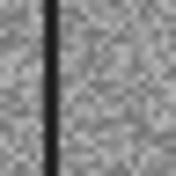

Visão robusta para pavimentos
Classificação visual e avaliação sob perturbações adversariais.

Estudo independente com dados sintéticos, inspirado em experiências setoriais do autor. Não representa entrega ou endosso de clientes. Métricas desta execução não demonstram desempenho em produção.
Problema e contexto
Classificação visual e avaliação sob perturbações adversariais.
Grupo CCR · Detran-DFImplementação atual
Dataset sintético de pavimentos, divisão por imagem-base, CNN e ResNet próprias; treinamento limpo e adversarial; FGSM e PGD com projeção L∞; relatório de accuracy e macro-F1 em holdout sintético.
Próximas etapas
Dataset real com licença; transferência de aprendizado; segmentação; múltiplas sementes; avaliação por trecho de estrada; GPU e monitoramento de drift.
Reproduza o experimento
python -m pip install -e .
python -m roadvision.demo
python -m unittest discover -s tests -vAmostra sintética

Imagem gerada para testar o pipeline; não é fotografia de um cliente.
Resultados e limites
Relatório da execução registrada. Consulte os parâmetros e os resultados negativos antes de interpretar as métricas.
Ver relatório completo
{
"synthetic": true,
"seed": 7,
"epochs": 25,
"train_images": 160,
"test_images": 60,
"epsilon_linf": 0.1,
"models": {
"cnn": {
"clean": {
"accuracy": 1.0,
"macro_f1": 1.0
},
"fgsm": {
"accuracy": 0.9166666865348816,
"macro_f1": 0.916083916083916
},
"pgd": {
"accuracy": 0.6833333373069763,
"macro_f1": 0.6480395183698673
}
},
"resnet": {
"clean": {
"accuracy": 1.0,
"macro_f1": 1.0
},
"fgsm": {
"accuracy": 0.5333333611488342,
"macro_f1": 0.4034090909090909
},
"pgd": {
"accuracy": 0.4333333373069763,
"macro_f1": 0.3023255813953488
}
},
"resnet_adversarial": {
"clean": {
"accuracy": 1.0,
"macro_f1": 1.0
},
"fgsm": {
"accuracy": 1.0,
"macro_f1": 1.0
},
"pgd": {
"accuracy": 1.0,
"macro_f1": 1.0
}
}
}
}